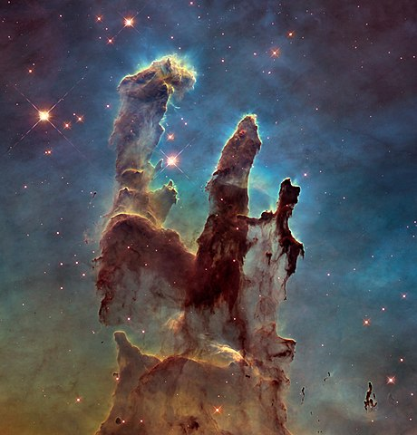

A World Not Made For Us (1 of 9)
Why?
This is part of a series on space colonization that I'll be uploading out of order. Once they're complete I'll rearrange them.
This world was not made for us. The majority of the Earth's surface is covered in undrinkable water. The southern continent of Antartica is completely inhospitable to human life. The deserts are expanding. Mosquitos kill one million people every year. Most of the world is inhospitable to us in some way. It is only by our own cleverness that we have been able to adapt to the diverse ecosystems across the planet.
We wear clothes to maintain our body heat. Chemical fertilizers are added to fields to increase our food supply. Lightbulbs keep us seeing after the sun goes down. Electricity, almost nonexistent in nature outside of thunderstorms, is produced in ever greater quantities. More than half of humanity now lives in the artificial environments of urban areas. This doesn't have to be a bad thing. If we can learn to tread gently on this planet our reign as Life's apex predator may be long.
As inhospitable as much of the Earth is to human life, every piece of it is still more livable than anything off world. This is the only home we have, or will have, for the foreseeable future. We may dream of changing other worlds to be more like our own but this misses what we are. We have our modest cultural adaptations: clothes, agriculture, electricity, etc..., which suffice on Earth. If we aren't too reflective on our nature it may appear that we can keep extending these cultural adaptations. That we can cover ourselves with bigger t-shirts and add more ammonia to the soil to adapt to off-world environments.
I have to ask, where is the limit to this? To some extent we are like water. We can take the shape of the glass we're put in. Yet water still has fundamental properties and is not infinitely transformable. Water is incompressible, it freezes and boils easily. Like us water has properties all its own. Water can be found in three states on Earth: solid, liquid, gaseous. If you want to imagine putting humanity off world think about what happens to water in the imagined environment. On Mars it's all frozen. We are 70% percent water with none of that percentage existing as a solid.
I love space exploration. I am as awestruck as anyone by the pictures taken by the Hubble Space Telescope. The Pilars of Creation really look like a star forge made by God. And when we contemplate the immensity of the planets in our solar system it's easy to see why they were named after the gods. What else is out there to see or know?
 2014 Hubble Space Telescope image of The Pillars of CreationI want to know more about the universe I live in. If given the chance I'd take the Faustian bargain one step further. Faust traded his soul for all worldly knowledge. I'd ask for all cosmic knowledge. Yet as fascinating and beautiful as the night sky is, I know that it was not made for me. The Earth itself was not made for me but rather the other way around. I am like the mud or the mountain which are shaped by the vagaries of weather.
Our current existence on the planet is possibly a fluke. For all the violence humanity has inflicted on itself nothing comes as close to total annihilation our ancestors faced. Evidence of our own near extinction is apparent. Genetically we're all very similar; if humans were dogs we'd all be the same breed. This suggests that we went through a genetic bottle neck, with estimates as low as 2,000 humans at some point. That would have put us in the category of Critically Endangered. There may have been more people but they didn't give us any of their genes. In terms of cutting it close this was an edge that could split atoms. It was probably pure luck we survived this bottle neck. If we could go back in time and run the clock again there isn't any guarantee that we'd come out on top. All the other species of human no longer exist. How the other humans disappeared isn't known. We, homo sapiens, might have taken them out, or it may have been nature. Either case is instructive to our future.
Plan-it B
One of the purported benefits of space colonization is to help humanity survive an existential risk. An event so climatic that it would wipe out all human life, or enough of it that civilization never recovers. Let's walk through the logic of what can be called the Plan B argument for space colonization. There are two cases here to consider. The one is where the colonies off-world will be large and self sufficient or at least have the capacity to become self sufficient. By self sufficient I mean that they could continue functioning without hinderance if cut off from Earth without warning for the duration of a cataclysm. The other case is one where the colonies would fall apart without support from Earth.
These off-world colonies could be giant space stations orbiting the sun or underground bunkers on Mars. The level of technology needed to colonize another star system is beyond us and at that level of tech we could probably just directly confront most cataclysms. The exact details aren't important for the moment. I just want to point out a few things about the Plan B argument. In the long term Plan B advocates will want self sufficient colonies. In the short term all we will have are the colonies that will rely on Earth's resources. Let's give the Plan B'ers the benefit of the doubt and say there is a large off-world self sufficient colony or group of colonies.
The prototypical argument for a Plan B colony is to recover after something like an asteroid hits the Earth. To avoid the fate of the dinosaurs. If an asteroid strikes and wipes out all or almost all humans the colonists will wait it out. Eventually when the Earth is close to habitable again the colonists will repopulate. How long will they wait? After the Chicxulub impactor hit Earth, killing off the dinosaurs, it took life at least 30,000 years to recover. The colonists may be able to speed things up a bit if they were able to reintroduce lost species to Earth. Still the scales of time we're talking here are enormous. Many generations will come and go off-world before Earth returns to Eden. Whose to say colonists would want to repopulate Earth? And if they decide to stay off of Earth how long will they stay human?
The group of colonists to do this job should be large enough to avoid genetic problems and maintain a reasonable standard of living. Specialization is a source of wealth. The larger the group of people, the more specialists can exist, the wealthier the community. The wealthier the colony the more robust it is. A small colony of stewards safeguarding frozen fetuses on the moon is not enough. For a Plan B to work you're going to need something that can wait out for the long haul.
The plan B argument doesn't hinge on repopulating Earth. The point is that humanity survives. How long can humans remain the same species when the environment becomes as artificial as a space colonist's would be. Our genes are plastic to the environment we're in. Through a combination of genetic drift, sexual selection, and a radically different environment humans will no longer be human. This may be a good or bad thing depending on your point of view. It is not clear if this is the fate of our species either way. In the long run we don't change and die or we change and still die. Focusing on the inevitable end to humanity isn't helpful either. Anymore helpful than deciding to kill your self right now because your own death is inevitable.
Let's talk about death for a second. My own interest in writing about space colonization started after thinking about a reoccurring nightmare I've had for the last decade. Dreams can seem more real than life sometimes. It would not surprise me to die in my current life and wake up to find that I had dreamt it all. That everything that I'm experiencing right now seems more real than waking life. But just because this is possible doesn't mean it's true.
I don't know if you can relate to dreams that are more vivid than life. A few years ago I had an MRI done and the doctor found a cyst on my pineal gland which may explain why my dreams feel so intense, so real. The pineal gland produces melatonin, a hormone that regulates sleep patterns. A pineal cyst is not uncommon. More than 1 in 50 people have one. I have to wonder though if they affect our sleep.
In my reoccurring dream I saw people trying to leave a dying world. When they left they went into an abyss of blackness. Some made it to other worlds but eventually these were exhausted too. Again people left but had no where to go. Everyone was eventually swallowed into an oblivion by the blackness. The entropic death of the universe.
We've all had more terrifying nightmares than this. What bothered me was its reoccurrence. Thinking the dream through has kept it from coming back. Clearly the blackness is the death, the annihilation, the place from which everything came and where it all goes back to. Most of us deal with our fear of death by producing something that we believe will outlive us. Children are the obvious example. Others make houses, create music, write stories. Necessity is said to be the mother of invention. I believe fear of death is the father of creation. A fear that doesn't give birth itself but impregnates the mind. Writing let's my mind give birth. Still the entropic death comes for everything. If a creation doesn't last forever does this negate the value of having made it? I don't see why it should.
We can step back from the short duration of our lives and look at our creations as a thread of continuity of ourselves. Keep stepping back. Go far enough and you'll see that everything is heading for the void. In 7.5 billion years the Sun will expand past Earth's orbit. Swallowing it and destroying everything we've ever known. Things will fall apart well before that of course but the Sun swallowing the Earth is the most vivid example of the slate being wiped clean. If something of humanity survives this, a descendent or creation of humanity, this too will face eventual annihilation.
I am not saying that we should all give up doing anything because death is inevitable. I am trying to make the opposite point, that life is rare and precious because death is the only constant. When thinking about Plan B arguments for space colonization we need to be mature in our understanding of an eventual annihilation. Seeing it without jumping to the conclusions of completely giving up or doing everything humanly possible to continue. Both conclusions are a submission of the mind to fear.
I have faith that space agencies around the world can catalogue most of the asteroids that could potentially collide with Earth. The actual danger that we'll go out like the dinosaurs is low. More likely we'll take ourselves out. I have no faith in humanity's ability to avoid a nuclear holocaust. We've had these weapons for barely 80 years. Ask yourself what would happen if we went back in time and gave nuclear bombs to Suleiman the Magnificent, Genghis Khan, or to Justinian the Great. How long do you think it would take before they used them? How many continents would be uninhabitable right now?
They were human and we are human. The only difference between rulers of the past and modern politicians are the clothes they wear. Their behavior is determined by the incentives of their time. Nuclear armed terrorist could destroy a nation but probably wouldn't be able to end civilization. Unless of course, the nuclear armed nation is run by terrorists.
Would an off world colony be enough to save us from nuclear Armageddon? Even at the peak of the nuclear arms race there weren't enough weapons to make humanity extinct directly. Most people would die from the bombs percussive force and radiation. The real annihilator would be the knock on effects. Enough dust would be kicked up into the air to blot out the sun for about a decade. No new crops. No warmth. Total famine. An off-world colony with surplus crops could save humanity from total famine. Then again it might just be smarter to invest all of our energies into avoiding this.
Climate change and an Artificial General Intelligence (AGI) are commonly touted as the possible ends to humanity. Off-world colonies won't protect us from these threats. Climate change will kill a lot of us and impoverish us but not kill all of us directly. It could lead to nuclear Armageddon as the world's superpowers fight for dwindling resources. Climate change may end civilization but it is unlikely to end humanity. Nuclear weapons are still the threat in this scenerio.
The dangers of an AGI are as real as the benefits. I suppose I'm not worried about the dangers of AGI because I still haven't seen the benefits. Most of the techniques I've seen for creating artificially intelligent behavior is just the application of advanced statistics, clever function approximations, and a couple other tricks. The human brain does some of these things but this isn't what makes us intelligent. I will start to be terrified when the machines can create insightful analogies.
The source of our intelligence is our ability to analogize. When a concept is beyond our immediate grasp a story or analogy of the concept brings it into a clear understanding. Machines can't do this yet. My dog can analogize better than AlphaGo, the computer that taught itself to beat human masters at the game of Go. Is this the only kind of intelligence? I don't know. We don't have a fully fleshed out theory of smarts. We can kind of tell that chimps are more clever than snakes and know it has something to do with the brain. We need to develop a general theory of intelligence to assess the threat.
Engineers are trained individuals with a culture of saftey. Surely they can handle creating minds on computers that won't accidentally kill us? Building a bridge that doesn't topple over is good engineering. Despite what's good engineering bridges still fall. On top of that most of the people working with AI aren't engineers. All that being said the invention of an AGI is a legitimate threat, even if created by benevolent people. Once an AI comes into being the genie won't be put back in the bottle. If machines become smart enough to wipe us out on Earth, on purpose or by accident, I don't think an off-world colony will stand a chance.
For a castastrophy that made Earth uninhabitable for a few generations the off-world colonies might have trouble restarting human civilization on Earth. The industrial revolution depended on deposits of easily accessible fossil fuels. Those have all been depleted. If we lost all of our technology and needed to restart from the industrial revolution we simply wouldn't be able to. Assuming the colonists had the capacity to build renewable power plants then humanity would have a shot of rebuilding. Even being able to rebuild has a downside. It may act as a rational for going full on nuclear holocaust. Someone with their finger on the button may think "Well, this'll be bad but it won't wipe us out forever." Plan B could potentially backfire in this way.
There are other extinction level events that could conceivably be overcome with robust off-world colonies. If Plan B is the sole argument for space colonization then we might as well just build habitats on the ocean floor. We could avoid the costs of lifting things into orbit, the perpetual radiation of space, and you could have normal Earth gravity in the deep ocean. If you're worried about a lack of solar power in the ocean don't be. There are thermal vents that could be used for power or the ocean itself if you have access to fissile materials or a fusion reactor. The ocean acts as a giant heat sink. Most of the ways we produce electricity right now work by heating steam up and using the difference in temperature to make a turbine move. Plan B is warranted in very few scenarios and among these an underwater colony could do just as well. Avoiding extinction through off world habitats shouldn't be the main reason to do it.
The Good, the Bad, the Petty
Full scale separate colonies off-world are derided for bad reasons as well as good. I wanted to walk through two arguments against space colonization that I find interesting. The first is that humanity simply isn't good enough. That we shouldn't spread out into space when we can't even settle things here. No, if we had to be perfect or even good enough to do anything nothing would get done. The people who think this way also misunderstand what can precipitate growth.
I've met a few people who were total shitheads. People who were selfish and reckless but learned to shape up after having kids. Something about putting responsibility on people can make some of them grow up. This of course isn't true for everyone. The point is that you can't discount someone as not being good enough when it may be the case that shouldering a new responsibility will make them good enough.
Another common anti-space colonization argument is the cost. With everything that could be fixed here on Earth why bother moving people into space? This is true. We could use the money to fix potholes or donate mosquito nets. This is a valid argument and what to do in space should be run through a cost-benefit analysis.
If humans are able to more cheaply mine asteroids in space then it seems apparent that doing so would be good. There are of course a lot of details to be worked out. Not just the technical ones but issues of commercializing space. We need a legal framework to proceed. Currently no nation can claim territory in space. This convention was conceived during the cold war. I believe the details will be worked out as we proceed. Laws don't stop avarice. The potential wealth will push forward new treaties and protocols for commercializing space.
The potential benefits are too great to ignore. It would be excellent for our environment if we could move most of our manufacturing into space. Taking the cost the environment currently bears from our current methods of production it seems obvious that harvesting and refining materials in space is a net positive. Though in reality it may not be for most people.
Here in the United States wealth inequality has been steadily growing for the last 30 years. As a whole the nation is wealthier but the typical citizen is no better off and is probably poorer when we take into account what actually makes life worth living. The major sources of meaning in a life are friends, family, religion, and work. You can't take away all of these things and expect people to be better off. As individuals we have facebook, pornography, and part time work but are lonelier, having less sex, and poorer.
The way the wealth that will be generated off world is spread on Earth matters a great deal. What's the point of making gold cheap enough to pave the roads if no one can afford a car? This is not a knock down argument but just something we have to be weary off. Extreme wealth inequality in any real democracy isn't stable. The problems associated with the new wealth in space aren't just about colonization. The same problems exist whether humans live and work off world or not. If we learn to deal with them we will be all the better off for it.
The desire to colonize space should be superseded by a desire to explore it. Exploration will have to come before any colonization efforts are made anyway. I am afraid that we may be so ignorant of things beyond Earth that we may inadvertently destroy very interesting scientific sites. There may exist on Mars or a moon of Jupiter some incomprehensible Rosetta stone like formation with details to our origins. Possibly details to our future. Prematurely colonizing other worlds may destroy opportunities for discovery that we are unaware of now.
This is not to say that I don't want manned research stations out there. Antartica has quite a few research stations and no colonies. These scientific stations give us some guide as to how we may proceed in space. By treaty no nation owns land in Antartica. The only reason to be on the continent is for non-commercial research. Something in the vein of the purely scientific research stations of Antartica would be amazing on other planets, moons, and in habitable satellites.
On one hand I am advocating for a purely scientific exploration of space, on the other I talk about the fabulous wealth out there. The areas of space I believe should be commercialized is very narrow. The chief industries of space should be mining, manufacturing, power generation, agriculture, and maybe tourism. I have a personal bias. I hate tourists. I hate the legions of people who waddle up Mount Everest for a selfie, leaving behind dead bodies and garbage. I hate the people who topple ancient stone formations. I hate the monolithic unstable markets they generate. If you want the moon to be littered with plastic bags bring tourists.
Putting aside my personal bias against certain industries it makes sense to commercialize certain areas of space. The 1976 book The High Frontier: Human colonies in space lays out one of the most coherent plans for colonizing space. The author, physicist Gerard O'Neill, opined that housing in space will only follow industry. Unless we industrialize space who could afford to live there? He wasn't envisioning colonies on other worlds. He wanted to actually colonize outer space. O'Neill proposed gigantic rotating space stations that could house thousands of people. He figured that the constant sunlight of outer space would allow colonists to grow their own food through the most intensive agriculture imaginable and have perpetual clean energy.
The stations needed to be immense. Artificial gravity was to be created by perpetually rotating the entire station. The larger the station, the less weird the artificial gravity would be. A larger station also meant more protection from radiation. Of the designs O'Neill proposes the largest came in at 4.5 billion tons. The average cost to launch a kilogram to the edge of the atmosphere, into low Earth orbit, was about $18,500 in the 70's. Low Earth orbit is where the international space station (ISS) is located. Most of the fuel a rocket expends is just trying to get it into low Earth orbit. At the time of this writing it costs SpaceX $2,720 to launch a kilogram into low Earth orbit. In the 1970's thru 1980's it would've cost $7.5 · 1016 just to get the material into low Earth orbit. For perspective the world's GDP in 1980 was 11 trillion U.S. dollars. Using the modern price we only get down to $1.1 · 1016 to launch 4.5 billion tons into low Earth orbit. The world's GPD in 2019 was 86.5 trillion dollars. This is financially out of reach in both eras.
Recognizing that it would be impossible to cheaply launch that much material into space O'Neill designed mass drivers, basically electric catapults, to launch material from the Moon's surface into orbit. The first few habitats to be built were to be within Earth's magnetic shield. At one of the Lagrange points between the Earth and Moon. A point where the the pulls of gravity from Earth and the Moon cancel each other out.
O'Neill imagined from there a whole fleet of space habitats spreading through our solar system. Some assumptions had to be made when O'Neill conceived of the habitats. There's more radiation out there than was originally thought. None of that should take away from his work. Sourcing materials from the Moon or asteroids does more good than harm.
The moon's elemental composition is very similar to the Earth's crust. It is hypothesized that something the size of Mars smacked the Earth while the solar system was forming. A piece that broke off became the Moon. The Moon has the raw materials you'd need for constructing O'Neill's cylinders but actually processing them would be difficult. Not impossible but definitely different.
Looking through the history of space colonization (a very short history) it is fascinating to see how each author imagined the industries around them as the ones that should go into space. I think it's fair to begin the history of space habitation with the self-taught Russian aerospace theorist Konstantin Tsiolkovsky. In 1920 he published Beyond the Earth, a book about living in outer space for the layman. There were stories predating this about space travel (From Earth to the Moon, 1865) but Beyond the Earth stands out for trying to show the reader that it was possible and good to spread out and colonize.
Tsiolkovsky's imagined habitats as greenhouses out in space. Having grown up in the latter half of the 19th century this doesn't surprise me. O'Neill writing in the 1970's thought the habitats would be great for tourism and manufacturing. A recent book The High Frontier: an easier way reworked a lot of the ideas that O'Neill had. The reworking didn't stress manufacturing as an industry as much as O'Neill did, focusing more on tourism. I'm beginning to see a pattern here. If it continues the next generation of people advocating for space colonization will tell us that space is a great place to spy on people and skirt taxes. The two ways current industries increase their profits. Let's stick to industries like manufacturing, agriculture, and energy production.
O'Neill's book has fictional letters that were supposed to be from the point of view of people living in his habitats. They're very boring and make the book painful to read. Skip them. What I can say about the habitats is that they have a very Utopian feel. Everything is better in space! Outside the Earth feels even more Utopian. I can't tell if their ideas are truly Utopian or just feel so because they share something in common with all Utopia's, they're planned societies.
Utopias are always presented as clocks. All the gears and levers are laid out. Once set in motion all the pieces tick along. Not all planned communities are Utopias but all Utopias are planned communities. I can't tell if O'Neill is a utopian thinker. No doubt he advocated planed communities in space but this is a necessity in the highly technical world of aerospace engineering. The O'Neill cylinders would probably be like the company towns of the 19th century, enticing and paternalistic.
The End is High
The question of why bother exploring at all still lingers. For those of us who want to know more about our origins, our selves, our future the need to explore space seems obvious. Not everyone feels this way. From experience I've learned that the truth is neglected for what is convenient or comfortable.
This isn't just about politicians denying human caused climate change. We all do this on a small scale. We lie to ourselves all the time. Telling ourselves that we're smarter, better looking, funnier than we really are. It's completely normal and healthy. I've noticed a strange clarity of my mind when I was extremely depressed. Maybe not clear on all things but clear on the things I was lying to myself about when feeling normal, less prone to exaggerate.
We need both eyes to see distance. If the folks advocating for moving humanity into space are the right eye let me be the left. Human settlements in space may or may not be our future. History is a record of dice throws. Destiny an illusion. Our offspring may go out into a world beyond Earth to become more than human. They may stay here on Earth, unable to adapt to a radically different environment.
Whether or not it is humanity's ultimate destiny to populate the stars I cannot say. Time is deep. Life is short. The farther out we look the shorter it can feel. Yet when I look up at the night sky I can feel my eyes stretch to infinity.
Most people live their lives knowing in some dim way that they're going to die. How rarely have I seen anyone act like they may one day die. It's not out of stupidity or ignorance that people live as though they plan to live forever. I believe the source of their behavior is the same reason we so often lie to ourselves: wishful thinking. How often I see someone think something is true because they want it to be true. They tell themselves that "this is the winning lottery ticket" or "He really loves me" or "I'm not going to die this year" without evidence. The source of such beliefs comes from wanting it to be true.
The writers, scientists, and entrepreneurs who want to see humans spread out and colonize the stars have diverse motivations. My contention is with the people who think humanity has a destiny in the stars. That leaving Earth will be humanity's final salvation and either as individuals or as a species live forever as we spread ever further out across the void.
As an immortal being myself I can assure you immortality has become very unpleasant. Every place becomes Hell when you're immortal. Novelty intensifies all the pleasant things in life. Live long enough and all the rainbows become gray. The immortality offered by an afterlife is just as Hellish as the immortality sought after by the people who want to upload their minds to computers to live forever. The fastest way to hate something is to never stop doing it.
Seriously though we may all be eternal beings. The universe might cycle itself. Creation, expansion, decay, and then boom! Everything starts again. We step out onto the stage for every performance. This is a way of being immortal but with a lack of continuity. You may recognize this as the theory of Eternal Return, that everything has already happened and will happen again. I'm not promoting it as true. I think it is a useful mental exercise. What does it have to tell us about the nature of immortality? Well, it tells me that the type of immortality that's tolerable is the discontinuous kind.